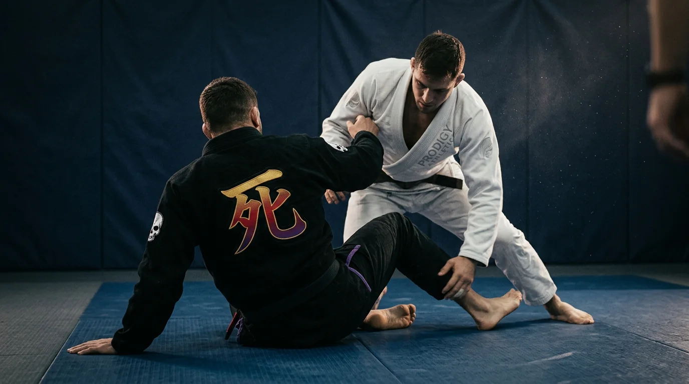
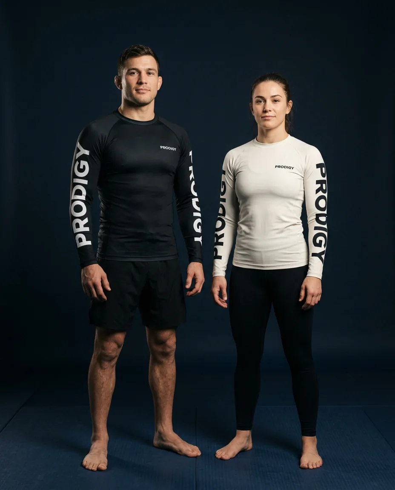
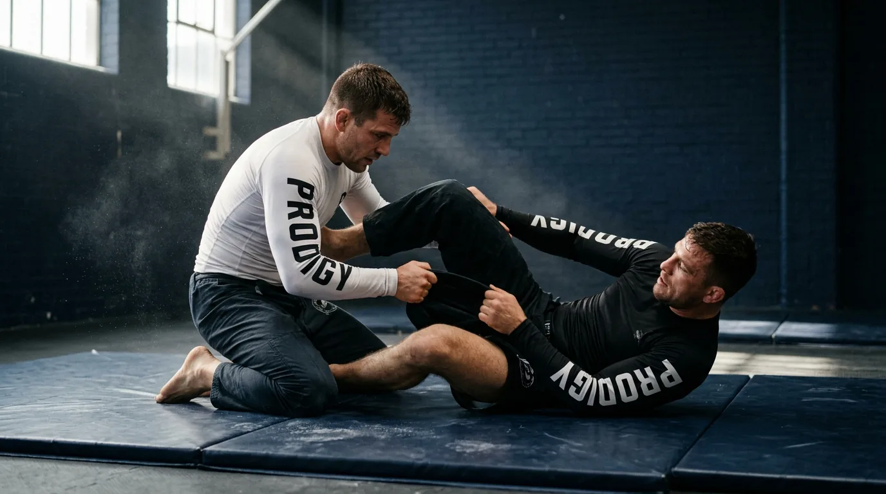
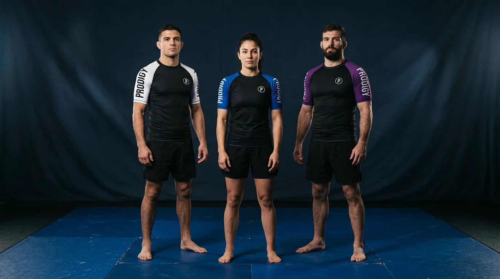
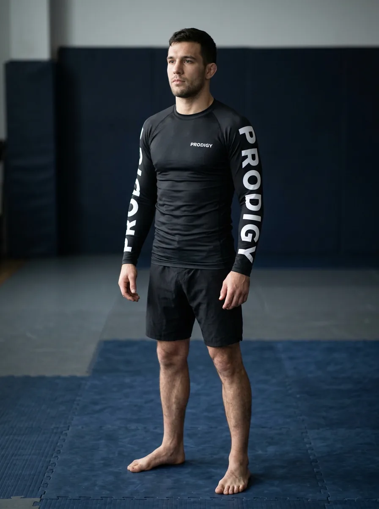
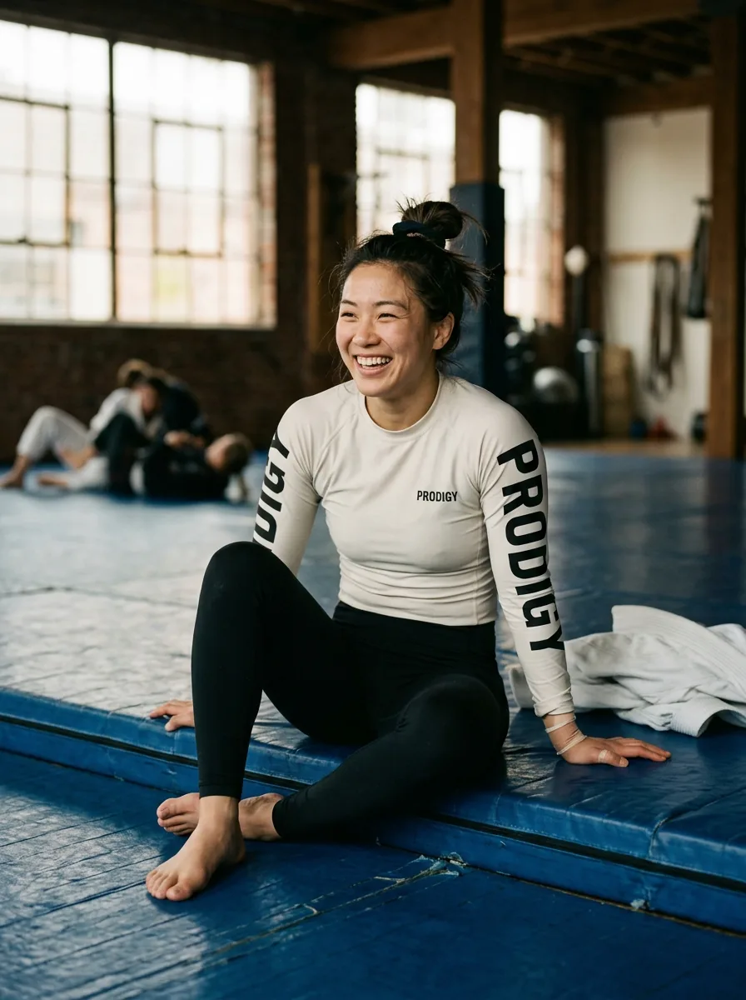
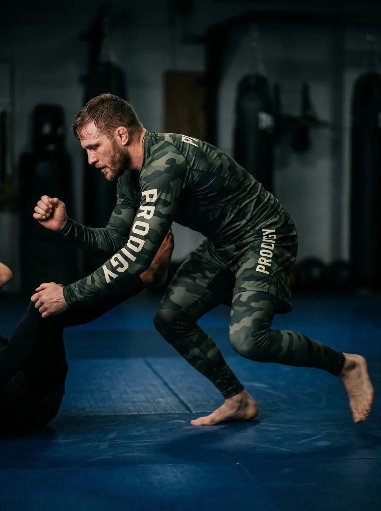
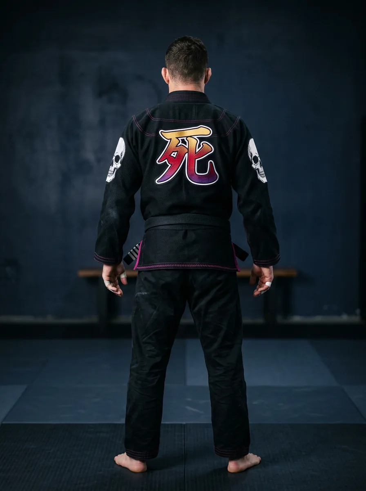
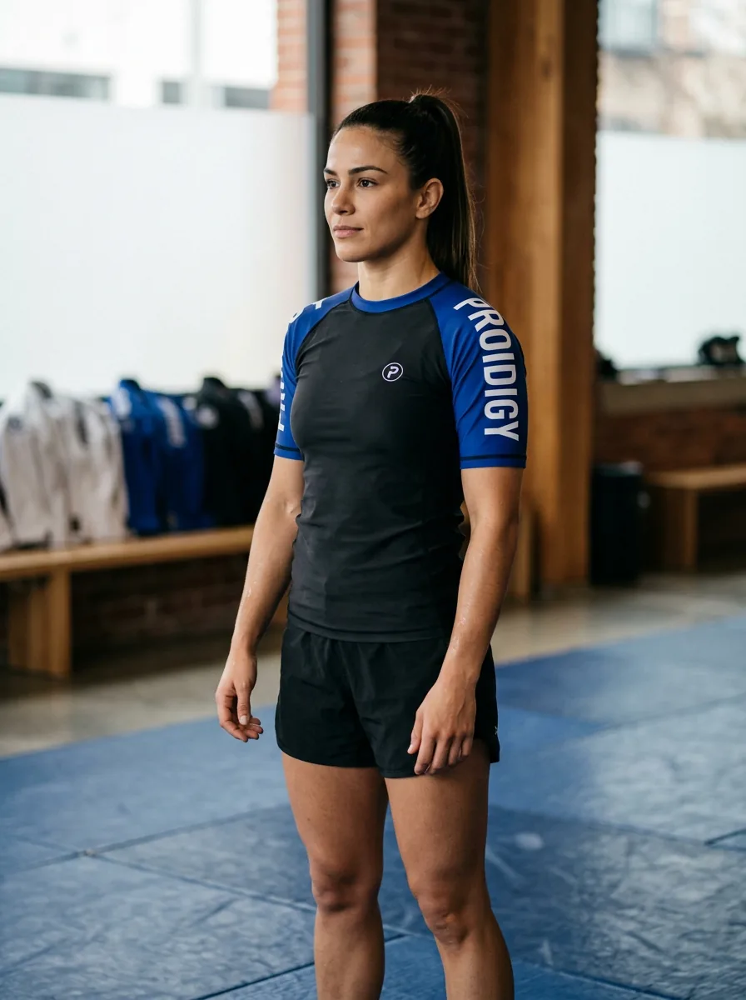
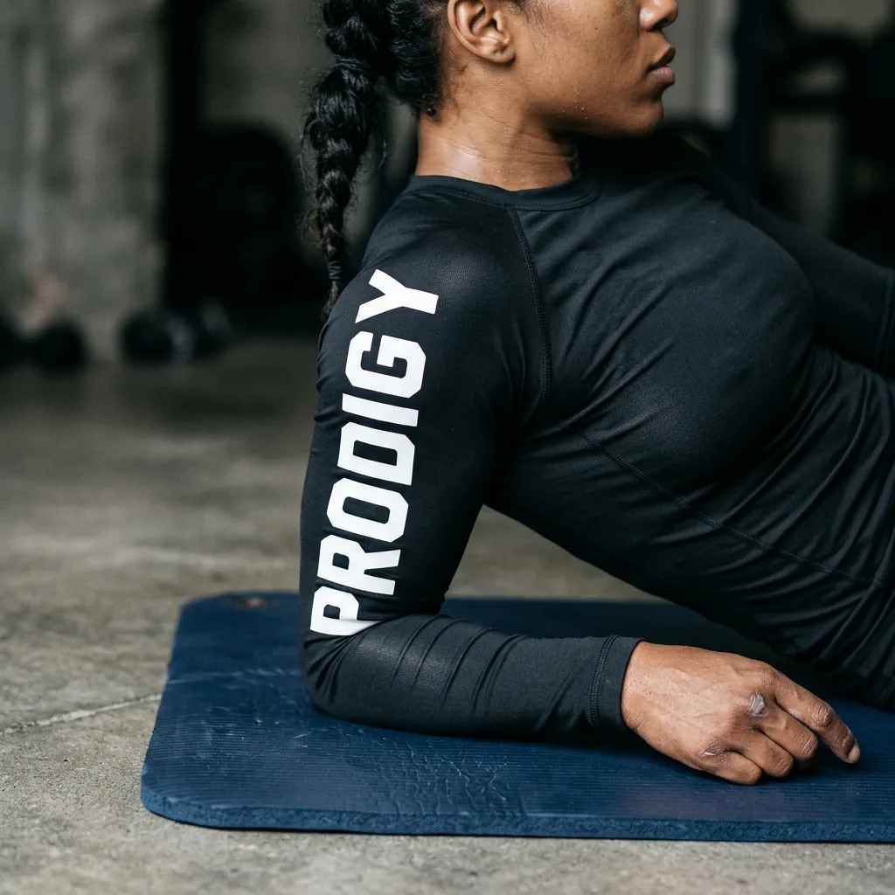

Five belts. One cut.
Ranked short sleeve, in white, blue, purple, brown and black. Rank colour sits in the sleeve panels and the collar binding, not in a stripe across the chest.

IBJJF Art. 8.1.14 requires the rashguard to be “colored black, white, or black and white, and with at least 10% of the rank color(belt) to which the athlete belongs.” The federation publishes no measuring method, so we build well clear of the line. Rule book
Black. White. Nothing else.
Long sleeve, chest lockup, sleeve print, back print. The version you wear when you are not thinking about what you are wearing.


One artwork, three cuts.
Dye sublimation prints flat on the roll, then the pieces are cut and sewn. The same file becomes the rashguard, the shorts and the spats.

Shoulder to cuff.
The gi came first.
Prodigy started as a kimono company. The rashguards are the newer line.

The renderer has no gi pattern yet. Nothing is shown in its place, and no photograph is used.
| Jacket weave | — to confirm |
|---|---|
| Jacket gsm | — to confirm |
| Pant | — to confirm |
| Sizes | A0–A6 |
| Shrinkage | — to confirm |


Upload it. See it. Send it.
Drop in artwork and see it on the real pattern, front and back. Export the mockup and the factory cut sheet in the same click.
The whole range.
Every image on this site is a render from our own pattern files. There is no photography yet.